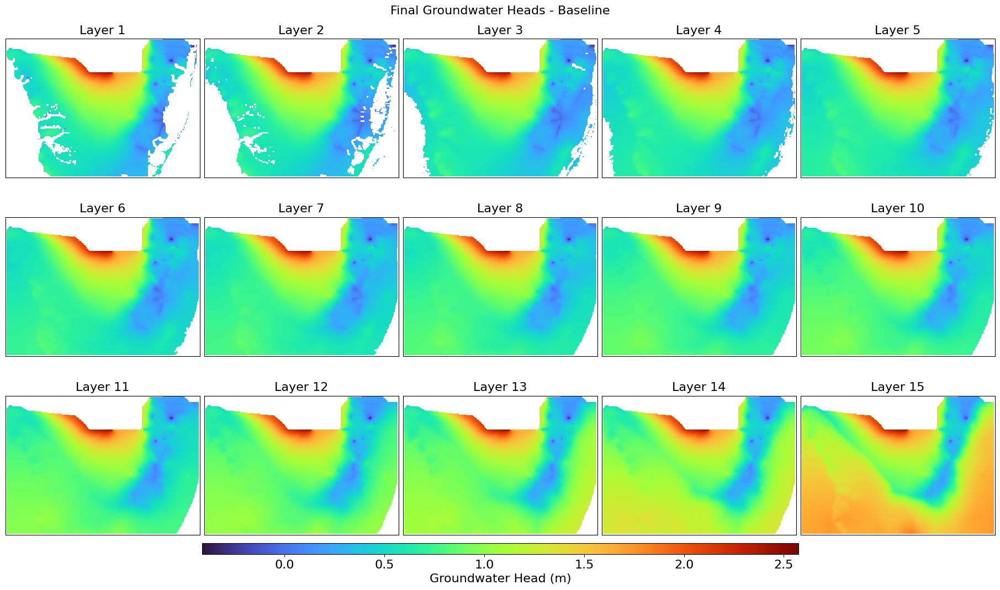
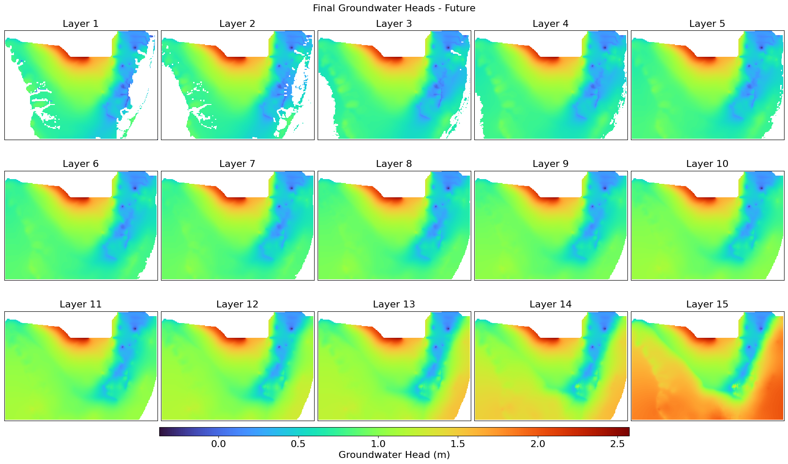
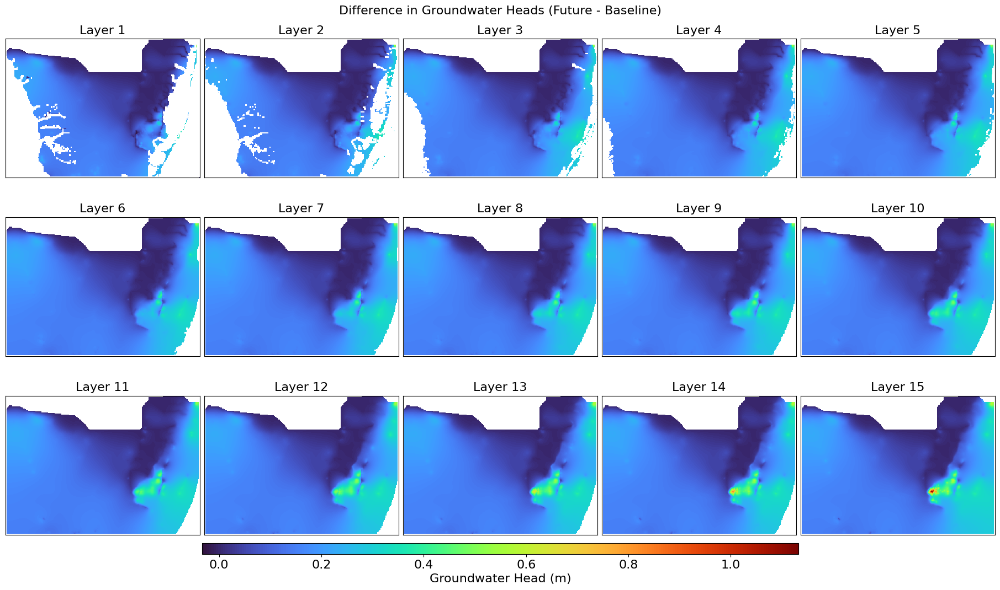
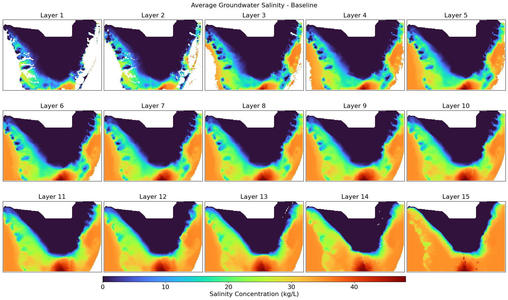
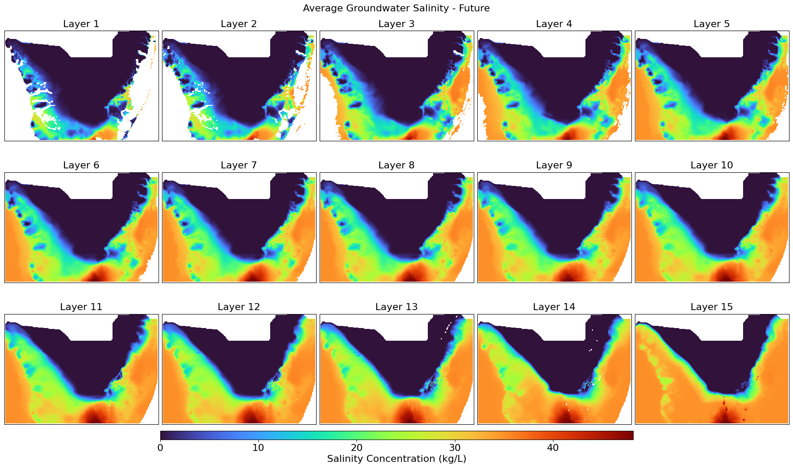
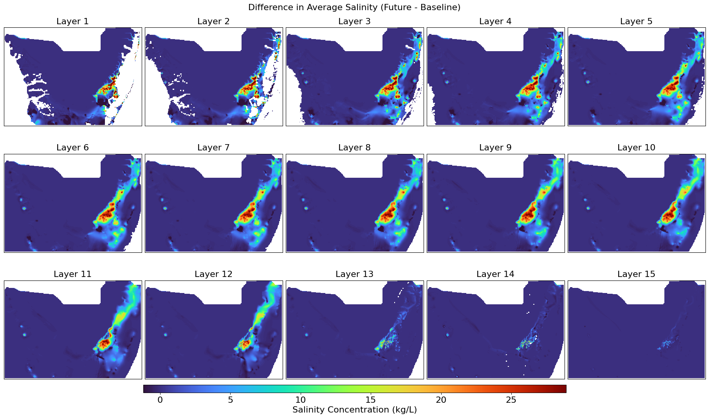

Modeling#
Extract GWL daily timeseries data from the .uhd binary data#
import flopy.utils.binaryfile as bf
import pandas as pd
import numpy as np
def extract_surface_head_timeseries(bdh_file, col, row):
"""
Extracts the head values from the first non-dry (saturated) layer for a given column and row.
Parameters:
bdh_file (str): Path to the MODFLOW binary head file.
col (int): Column index.
row (int): Row index.
Returns:
pd.DataFrame: DataFrame containing Time and Surface Head values.
"""
# Load binary head file
head_obj = bf.HeadFile(bdh_file)
# Get simulation times
times = head_obj.get_times()
# Extract surface heads
surface_heads = []
for t in times:
heads = head_obj.get_data(totim=t) # 3D array of heads at this time step
# Find the first non-dry (saturated) layer
surface_head = np.nan # Default to NaN if all layers are dry
for layer in range(heads.shape[0]):
if heads[layer, row, col] > -9999: # Assuming -9999 is the MODFLOW dry cell value
surface_head = heads[layer, row, col]
break # Stop at the first valid layer
surface_heads.append(surface_head)
# Create DataFrame
df = pd.DataFrame({'Time': times, 'Surface_Head': surface_heads})
return df
# Example Usage
bdh_file = "C:/Users/mgebremedhin/Documents/FGCU/BISECT/Model_new/farfuture/output/Output.future/timeBB.uhd"#timeBB.uhd"
# Specify row and column
col, row = 204,118 # Example coordinates
# Extract surface head data
surface_head_df = extract_surface_head_timeseries(bdh_file, col, row)
# Display the first few rows
print(surface_head_df.head())
# Save to CSV (optional)
surface_head_df.to_csv(f"C:/Users/mgebremedhin/Documents/FGCU/BISECT/PostProcessing/BISECT_Validation/GWL_head_timeseries_farfuture_SD_D_6hr_Head_grid_{col}_{row}.csv", index=False)
---------------------------------------------------------------------------
FileNotFoundError Traceback (most recent call last)
Cell In[1], line 50
47 col, row = 204,118 # Example coordinates
49 # Extract surface head data
---> 50 surface_head_df = extract_surface_head_timeseries(bdh_file, col, row)
52 # Display the first few rows
53 print(surface_head_df.head())
Cell In[1], line 18, in extract_surface_head_timeseries(bdh_file, col, row)
6 """
7 Extracts the head values from the first non-dry (saturated) layer for a given column and row.
8
(...)
15 pd.DataFrame: DataFrame containing Time and Surface Head values.
16 """
17 # Load binary head file
---> 18 head_obj = bf.HeadFile(bdh_file)
20 # Get simulation times
21 times = head_obj.get_times()
File ~\AppData\Local\miniconda3\Lib\site-packages\flopy\utils\binaryfile.py:657, in HeadFile.__init__(self, filename, text, precision, verbose, **kwargs)
655 self.text = text.encode()
656 if precision == "auto":
--> 657 precision = get_headfile_precision(filename)
658 if precision == "unknown":
659 s = f"Error. Precision could not be determined for {filename}"
File ~\AppData\Local\miniconda3\Lib\site-packages\flopy\utils\binaryfile.py:399, in get_headfile_precision(filename)
396 result = "unknown"
398 # Open file, and check filesize to ensure this is not an empty file
--> 399 f = open(filename, "rb")
400 f.seek(0, 2)
401 totalbytes = f.tell()
FileNotFoundError: [Errno 2] No such file or directory: 'C:/Users/mgebremedhin/Documents/FGCU/BISECT/Model_new/farfuture/output/Output.future/timeBB.uhd'
GW heads of each layer of the basline and future - last stress periods of each scenario (testing stage of BISECT model)#
import flopy.utils.binaryfile as bf
import numpy as np
import rasterio
from rasterio.transform import from_origin
import matplotlib.pyplot as plt
import os
import matplotlib.colors as mcolors
def extract_heads_final(udh_file, final_stress_period=3286):
"""
Extracts the spatial grid of head values for the final stress period,
while treating -9999 values as inactive cells.
"""
head_obj = bf.HeadFile(udh_file)
heads_3d = head_obj.get_data(totim=final_stress_period)
# Convert unwanted values (-9999) to NaN
heads_3d = np.where(heads_3d == 999, np.nan, heads_3d)
return heads_3d
def save_heads_layers_as_tiff(heads_3d, output_folder, prefix, left, right, top, bottom):
"""
Saves each groundwater head layer as a separate GeoTIFF file.
"""
os.makedirs(output_folder, exist_ok=True)
nrows, ncols = heads_3d.shape[1], heads_3d.shape[2]
cell_width = (right - left) / ncols
cell_height = (top - bottom) / nrows
transform = from_origin(left, top, cell_width, cell_height)
for i in range(heads_3d.shape[0]):
output_path = os.path.join(output_folder, f"{prefix}_Layer_{i+1}.tif")
meta = {
'driver': 'GTiff',
'dtype': 'float32',
'nodata': np.nan,
'width': ncols,
'height': nrows,
'count': 1,
'crs': 'EPSG:26917',
'transform': transform
}
with rasterio.open(output_path, 'w', **meta) as dst:
dst.write(heads_3d[i, :, :].astype(np.float32), 1)
#print(f"Saved: {output_path}")
def plot_heads_layers(heads_3d, title, output_file, left, right, top, bottom):
"""
Displays all groundwater head layers with a percent clip stretch type.
"""
fig, axes = plt.subplots(nrows=3, ncols=5, figsize=(18, 10), constrained_layout=True)
extent = [left, right, bottom, top]
vmin, vmax = np.nanpercentile(heads_3d, [0, 100]) # Percent clip stretch (0.5%-99.9%)
cmap = plt.get_cmap("turbo")
norm = mcolors.Normalize(vmin=vmin, vmax=vmax)
for i, ax in enumerate(axes.flat):
if i < heads_3d.shape[0]:
img = ax.imshow(heads_3d[i, :, :], extent=extent, cmap=cmap, origin='upper', norm=norm)
ax.set_title(f'Layer {i+1}', fontsize=16)
ax.set_xticks([])
ax.set_yticks([])
cbar_ax = fig.add_axes([0.2, 0.001, 0.6, 0.02])
cbar = fig.colorbar(img, cax=cbar_ax, orientation='horizontal')
cbar.set_label('Groundwater Head (m)', fontsize=16)
cbar.ax.tick_params(labelsize=16)
plt.suptitle(title, fontsize=16)
plt.savefig(output_file, dpi=300, bbox_inches='tight')
plt.show()
# File paths
baseline_udh = "C:/Users/mgebremedhin/Documents/FGCU/BISECT/Model_new/Baseline/output/Output.Baseline/timeBB.uhd"
future_udh = "C:/Users/mgebremedhin/Documents/FGCU/BISECT/Model_new/nearFuture/output/Output.Future/timeBB.uhd"
output_folder = "C:/Users/mgebremedhin/Documents/FGCU/BISECT/PostProcessing/GW_Heads/Tiff_Final"
# Define bounding box
left, right, top, bottom = 461000.0, 590500.0, 2872000.0, 2779000.0
# Extract heads for final stress period
heads_baseline_final = extract_heads_final(baseline_udh)
heads_future_final = extract_heads_final(future_udh)
# Compute difference (Future - Baseline)
heads_difference = heads_future_final - heads_baseline_final
# Save each layer as a TIFF file
save_heads_layers_as_tiff(heads_baseline_final, output_folder, "Heads_Baseline_Final", left, right, top, bottom)
save_heads_layers_as_tiff(heads_future_final, output_folder, "Heads_Future_Final", left, right, top, bottom)
save_heads_layers_as_tiff(heads_difference, output_folder, "Heads_Difference_Final", left, right, top, bottom)
# Display all layers
plot_heads_layers(heads_baseline_final, "Final Groundwater Heads - Baseline",
"Heads_Baseline_Final.png",
left, right, top, bottom)
plot_heads_layers(heads_future_final, "Final Groundwater Heads - Future",
"Heads_Future_Final.png",
left, right, top, bottom)
plot_heads_layers(heads_difference, "Difference in Groundwater Heads (Future - Baseline)",
"Heads_Difference_Final.png",
left, right, top, bottom)



Time series Gw Salinity extraction#
import flopy.utils.binaryfile as bf
import pandas as pd
import numpy as np
def extract_salinity_timeseries(ucn_file, col, row):
"""
Extracts the salinity (concentration) values for all layers at a given column and row.
Parameters:
ucn_file (str): Path to the MT3D UCN binary file.
col (int): Column index.
row (int): Row index.
Returns:
pd.DataFrame: DataFrame containing Time and Salinity values for each layer.
"""
# Load the UCN file
ucn_obj = bf.UcnFile(ucn_file)
# Get simulation times
times = ucn_obj.get_times()
# Initialize list to store salinity values
salinity_data = []
for t in times:
conc = ucn_obj.get_data(totim=t) # 3D array of concentrations at this time step
# Extract values from each layer at the given row, col
layer_values = [conc[layer, row, col] for layer in range(conc.shape[0])]
# Append time and salinity values
salinity_data.append([t] + layer_values)
# Create column names dynamically for all layers
layer_columns = [f"Layer_{i+1}" for i in range(conc.shape[0])]
# Create DataFrame
df = pd.DataFrame(salinity_data, columns=["Time"] + layer_columns)
return df
# Example Usage
ucn_file = "C:/Users/mgebremedhin/Documents/FGCU/BISECT/Model_new/Baseline/output/Output.Baseline/MT3D001.UCN"
# Specify row and column
col, row = 184, 144 # Example grid coordinates
# Extract salinity data for all layers
salinity_df = extract_salinity_timeseries(ucn_file, col, row)
# Display the first few rows
print(salinity_df.head())
# Save to CSV (optional)
output_file = f"C:/Users/mgebremedhin/Documents/FGCU/BISECT/PostProcessing/BISECT_Validation/Salinity_timeseries_Baseline_grid_{col}_{row}.csv"
salinity_df.to_csv(output_file, index=False)
#print(f"Saved CSV successfully: {output_file}")
Time Layer_1 Layer_2 Layer_3 Layer_4 Layer_5 Layer_6 Layer_7 \
0 1.0 0.679733 0.772024 1.338979 2.337256 3.610289 5.077246 6.852144
1 2.0 0.679552 0.771788 1.339062 2.337384 3.610240 5.077137 6.851869
2 3.0 0.679279 0.773035 1.341798 2.340626 3.613560 5.080600 6.855250
3 4.0 0.679847 0.776326 1.348086 2.348184 3.621765 5.089721 6.864512
4 5.0 0.680758 0.779984 1.354956 2.357055 3.631710 5.100378 6.874903
Layer_8 Layer_9 Layer_10 Layer_11 Layer_12 Layer_13 Layer_14 \
0 8.962332 11.327460 13.878865 16.679836 20.196846 21.343370 21.453350
1 8.961963 11.327412 13.878721 16.679436 20.196201 21.343332 21.453348
2 8.965066 11.329945 13.880394 16.680258 20.196302 21.343332 21.453354
3 8.973144 11.336127 13.884745 16.682961 20.196623 21.343348 21.453398
4 8.982054 11.342890 13.889488 16.685915 20.197044 21.343367 21.453440
Layer_15
0 22.400387
1 22.400394
2 22.400408
3 22.400429
4 22.400450
Salinity for each layer of the baseline and farfuture and thier difference (average of all stress periods)#
import flopy.utils.binaryfile as bf
import numpy as np
import rasterio
from rasterio.transform import from_origin
import matplotlib.pyplot as plt
import os
import matplotlib.colors as mcolors
def extract_salinity_avg(ucn_file):
"""
Extracts and computes the average salinity across all stress periods.
"""
ucn_obj = bf.UcnFile(ucn_file)
times = ucn_obj.get_times()
salinity_list = [ucn_obj.get_data(totim=t) for t in times]
salinity_3d_avg = np.nanmean(np.where(np.isin(salinity_list, [-9999, 999, -1]), np.nan, salinity_list), axis=0)
return salinity_3d_avg
def save_salinity_layers_as_tiff(salinity_3d, output_folder, prefix, left, right, top, bottom):
"""
Saves each groundwater salinity layer as a separate GeoTIFF file.
"""
os.makedirs(output_folder, exist_ok=True)
nrows, ncols = salinity_3d.shape[1], salinity_3d.shape[2]
cell_width = (right - left) / ncols
cell_height = (top - bottom) / nrows
transform = from_origin(left, top, cell_width, cell_height)
for i in range(salinity_3d.shape[0]):
output_path = os.path.join(output_folder, f"{prefix}_Layer_{i+1}.tif")
meta = {
'driver': 'GTiff',
'dtype': 'float32',
'nodata': np.nan,
'width': ncols,
'height': nrows,
'count': 1,
'crs': 'EPSG:26917',
'transform': transform
}
with rasterio.open(output_path, 'w', **meta) as dst:
dst.write(salinity_3d[i, :, :].astype(np.float32), 1)
def plot_salinity_layers(salinity_3d, title, output_file, left, right, top, bottom):
"""
Displays all groundwater salinity layers with a percent clip stretch type.
"""
fig, axes = plt.subplots(nrows=3, ncols=5, figsize=(18, 10), constrained_layout=True)
extent = [left, right, bottom, top]
vmin, vmax = np.nanpercentile(salinity_3d, [0.5, 99.9])
cmap = plt.get_cmap("turbo")
norm = mcolors.Normalize(vmin=vmin, vmax=vmax)
for i, ax in enumerate(axes.flat):
if i < salinity_3d.shape[0]:
img = ax.imshow(salinity_3d[i, :, :], extent=extent, cmap=cmap, origin='upper', norm=norm)
ax.set_title(f'Layer {i+1}', fontsize=16)
ax.set_xticks([])
ax.set_yticks([])
cbar_ax = fig.add_axes([0.2, 0.001, 0.6, 0.02])
cbar = fig.colorbar(img, cax=cbar_ax, orientation='horizontal')
cbar.set_label('Salinity Concentration (kg/L)', fontsize=16)
cbar.ax.tick_params(labelsize=16)
plt.suptitle(title, fontsize=16)
plt.savefig(output_file, dpi=300, bbox_inches='tight')
plt.show()
# File paths
baseline_ucn = "C:/Users/mgebremedhin/Documents/FGCU/BISECT/Model_new/Baseline/output/Output.Baseline/MT3D001.UCN"
future_ucn = "C:/Users/mgebremedhin/Documents/FGCU/BISECT/Model_new/FarFuture/output/Output.Future/MT3D001.UCN"
output_folder = "C:/Users/mgebremedhin/Documents/FGCU/BISECT/PostProcessing/GW_Salinity/Tiff_Final"
# Define bounding box
left, right, top, bottom = 461000.0, 590500.0, 2872000.0, 2779000.0
# Extract average salinity over all stress periods
salinity_baseline_avg = extract_salinity_avg(baseline_ucn)
salinity_future_avg = extract_salinity_avg(future_ucn)
# Compute difference (Future - Baseline)
salinity_difference = salinity_future_avg - salinity_baseline_avg
# Save each layer as a TIFF file
save_salinity_layers_as_tiff(salinity_baseline_avg, output_folder, "Salinity_Baseline_Avg", left, right, top, bottom)
save_salinity_layers_as_tiff(salinity_future_avg, output_folder, "Salinity_Future_Avg", left, right, top, bottom)
save_salinity_layers_as_tiff(salinity_difference, output_folder, "Salinity_Difference_Avg", left, right, top, bottom)
# Display all layers
plot_salinity_layers(salinity_baseline_avg, "Average Groundwater Salinity - Baseline",
"Salinity_Baseline_Avg.png",
left, right, top, bottom)
plot_salinity_layers(salinity_future_avg, "Average Groundwater Salinity - Future",
"Salinity_FarFuture_Avg.png",
left, right, top, bottom)
plot_salinity_layers(salinity_difference, "Difference in Average Salinity (Future - Baseline)",
"Salinity_Difference_Avg.png",
left, right, top, bottom)


